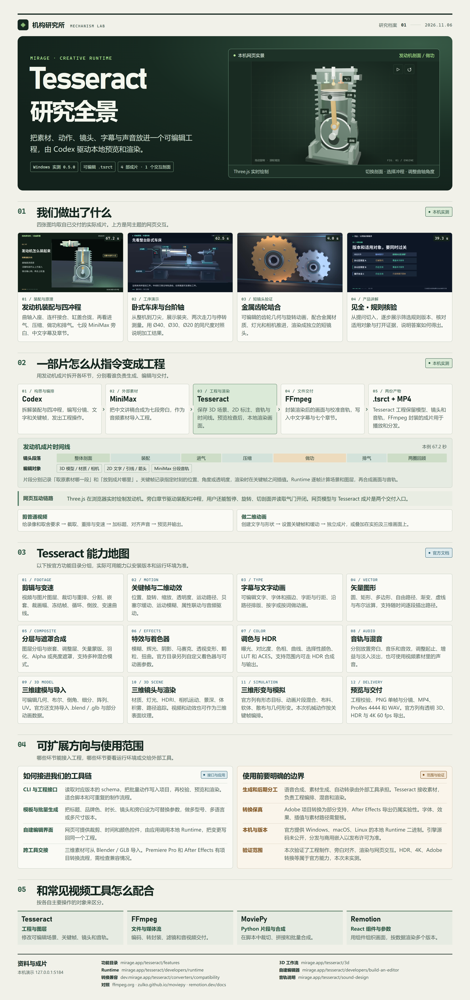
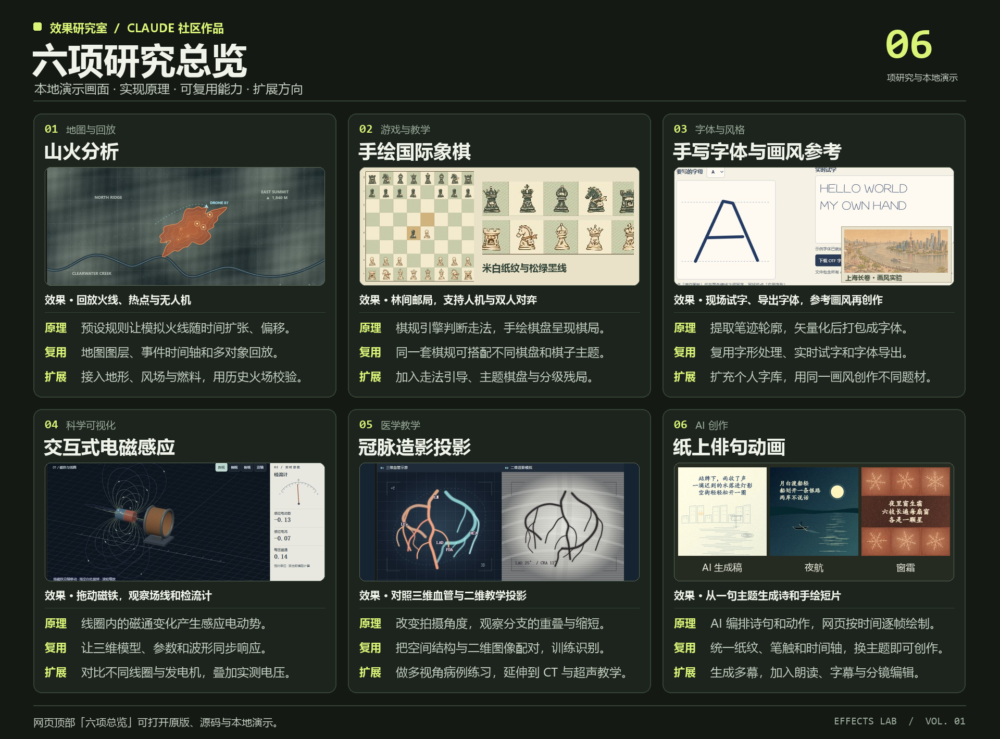

从源项目与真实问题理解机制，记录研究目标、可操作的复现与发现，再按需求迁移到自己的产品。
查看仓库与研究索引| 编号 | 研究项目 | 能力与价值摘要 | 演示 |
|---|---|---|---|
| 001 | 交互效果实验室 | 16 个交互参考与五步家具体验，研究材质、展示和业务交互的组合。 | 进入 ↗ |
| 002 | 电梯叙事与工具能力 | 角色乘电梯逐层导览，连接共享时间轴、互动与短片输出。 | 进入 ↗ |
| 003 | 风吹信封与付费前检查 | 三组原片比较提示与首尾帧，提炼付费前叠帧检查和局部合成。 | 进入 ↗ |
| 004 | Tesseract 的能力与价值 | 用可编辑工程组织剪辑、二维图层、三维场景与讲解成片。 | 进入 ↗ |
| 005 | 见全 · 跨领域认知导航 | 从全景与问题进入行业、基础与学习路线，连接图解和练习。 | 进入 ↗ |
| 006 | 六个优秀产品研究 | 从六个产品效果理解规则、数据与风格，保留演示与复用边界。 | 进入 ↗ |
| 007 | 个人网页 3D 效果合集 | 37 项网页 3D 效果，服务选型、共享引擎和动态人物重打光研究。 | 进入 ↗ |
| 008 | 16 个链接的能力与价值 | 15 条原帖加 1 个有声剪辑补充，解析生图、短片、3D、Agent 与知识库，展示实测产物。 | 进入 ↗ |
| 009 | GPT-6.2 的 3D 生成探索 | 把自然语言需求转成可编辑的角色、动作、特效与故事场景，研究原型制作、视觉讲解和跨场景复用价值。 | 进入 ↗ |
| 010 | 未来社会叙事与 AI 价值 | 从人物小事观察五年、十年后的社会，以五个 3D 原型、同幕对照、约束模拟与 MiniMax 配音研究协调、资源与劳动记录，保留情景假设和观众理解的验证范围。 | 进入 |



核心研究 Tesseract 的剪辑、二维动画、三维场景和音轨能力，以及对讲解制作和后续修改的价值。四部成片验证本机制作、路径追踪与 MiniMax 配音交付。
保留原有研究引导图、十二类能力、工具分工、可下载工程和发动机交互。明确区分已实测、官方支持与待验证，复用省时和真实教学收益继续测量。



整理 Adam Chernick 个人制作并基于开源示例扩展的 37 项网页实验，覆盖折叠、液态金属、布料、产品拆解、反射、3DGS / 4DGS 和交互科普。
沿用已有引导图，保留逐项原版入口、原理与应用参考。价值在效果选型、共享引擎与动态人物重打光，源码改造、产品化、多设备评估和后续作品继续按需求扩展。